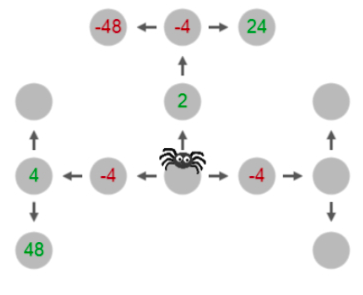
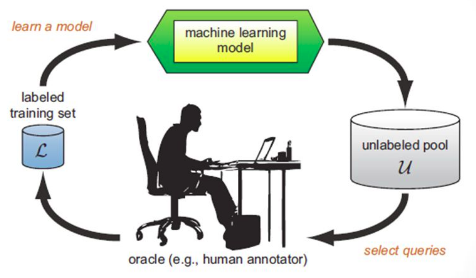

|
Sanit Gupta
atpugtinass@gmail.com unscramble
|
I am a senior undergraduate at IIT Bombay.
My primary interest is in the domain of artificial intelligence
with a focus on reinforcement learning. I am particularly interested in developing efficient reinforcement learning and bandit algorithms and proving guarantees on their performance. I am also fascinated by various other fields, including distributed computing, deep learning, optimization, and applications in healthcare and finance.
During my internship at the Max Planck Institute for Intelligent Systems under Dr. Falk Lieder,
I worked on reverse engineering human learning mechanisms.
Right now, I am working on developing PAC-Optimal Reinforcement Learning algorithms under the supervision of Prof. Shivaram Kalyanakrishnan.
|
|
|
Updates
- [Jul 2020] Our work on modelling the spread of COVID-19 in India is now out on arXiv
- [Jun 2020] I was accepted into the DLRL Summer School 2020 hosted by CIFAR and Mila
- [Feb 2020] I'll be joining Optiver as a Trader in September 2020
- [Aug 2019] I was awarded the Undergraduate Research Award at IIT Bombay!
- [Jul 2019] Our paper on reverse engineering human planning accepted at CCN 2019!
- [May 2019] I'll be interning at the Max Planck Institute for Intelligent Systems over Summer 2019
- [Jan 2018] Represented IIT Bombay in the Optimal Bidding challenge at the 6th Inter-IIT Technical Meet
- [Sep 2017] Ranked 1st in IIT Bombay in American Express's data science competition
|
|
Research & Professional Experience
|

|
An India-specific Compartmental Model for Covid-19: Projections and Intervention Strategies by Incorporating Geographical, Infrastructural and Response Heterogeneity
Sanit Gupta, Sahil Shah, Sumit Chaturvedi, Pranav Thakkar, Parvinder Solanki, Soham Dibyachintan, Sandeepan Roy, M. B. Sushma, Adwait Godbole, Noufal Jaseem, Pradumn Kumar, Sucheta Ravikanti, Aritra Das, Giridhara R. Babu, Tarun Bhatnagar, Avijit Maji, Mithun K. Mitra, Sai Vinjanampathy
preprint //
code
|
|

|
How do people learn how to plan?
Yash Raj Jain, Sanit Gupta, Vasundhara Rakesh,
Peter Dayan, Frederick Callaway,
Falk Lieder
Cognitive Computational Neuroscience (CCN) 2019
|

|
Developing and Analyzing Algorithms for the Multi-Armed Bandit
With Prof. Shivaram Kalyanakrishnan
report //
slides
In the MAB problem, resources must be dynamically allocated between competing choices. We are developing and analyzing algorithms for the regret minimization setting of the bandit problem.
We introduce an element of greediness called ’persistence’ into any bandit algorithm. We have proved that ’persistence’ improves the epsilon-greedy algorithm. Also, we have empirically demonstrated improvements over the state-of-the-art and have made substantial progress towards proving formal guarantees on their performance.
|

|
Parallel Computing for the Laplace Equation on Unstructured Grids
With Prof. Shivasubramanian Gopalakrishnan
The solution to the laplacian equation is used in a large number of domains, including finding the steady state temperatures of an object given the boundary conditions.
We developed a solver that can iteratively compute the solution to the laplacian for arbitrarily shaped objects. It also distributes the computation among whatever number of processors is available to achieve maximum speed-up. MPI was used to perform inter-processor communication after every iteration. We used graph partitioning algorithms to minimize the communication volume and distribute the work optimally. We were able to achieve speed-ups of upto ~12x.
|
|

|
E-Commerce Product Classification incorporating human feedback
Lymbyc, Bangalore
Built a machine learning pipeline to classify e-commerce products into categories, introduced an active learning component.
Active learning by Pool based Entropy sampling increased classification accuracy from 89.2% to 98%.
|

|
Distributed Mixed Integer Optimization
High Performance Scientific Computing
Developed a solver for mixed integer programs implementing the Branch-And-Bound algorithm.
Designed a parallel version that could reduce runtime from exponential to linear given enough cores
|

|
Optimal Bidding
6th Annual Inter-IIT Tech Meet
Solved a stochastic optimization problem to minimize electricity bill for a gated community.
Implemented the solutions using Particle Swarm Optimization and Dynamic Programming
|
|
{kind=link}